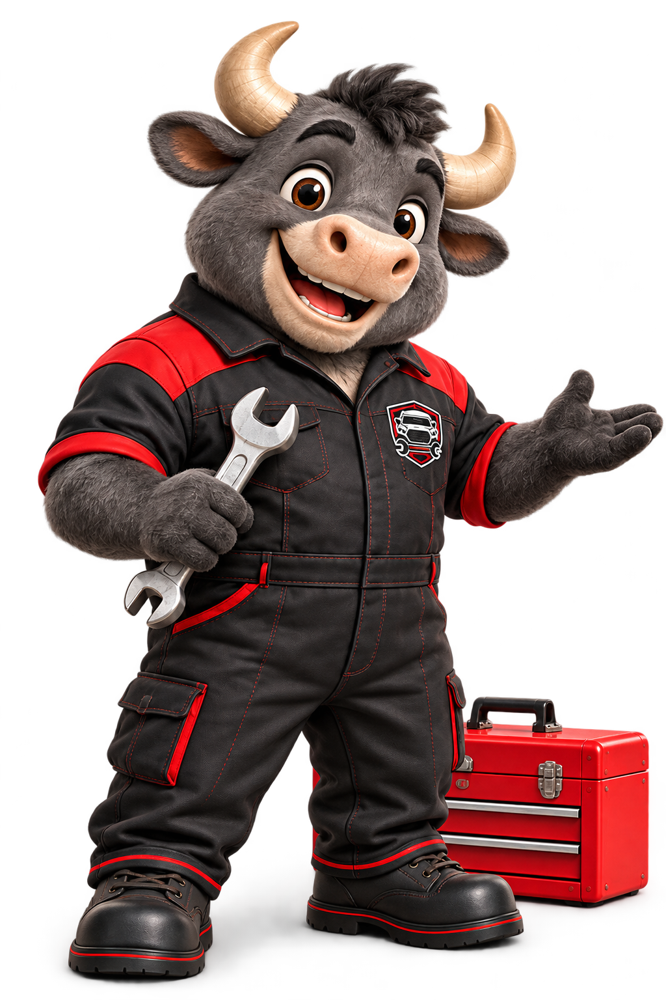
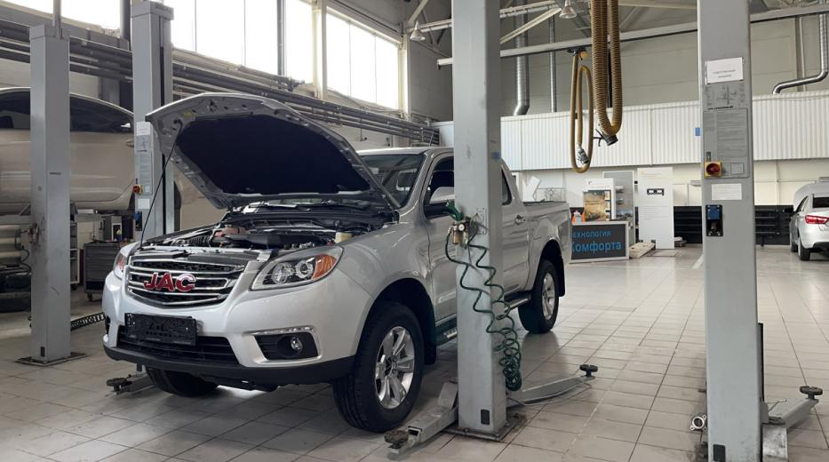
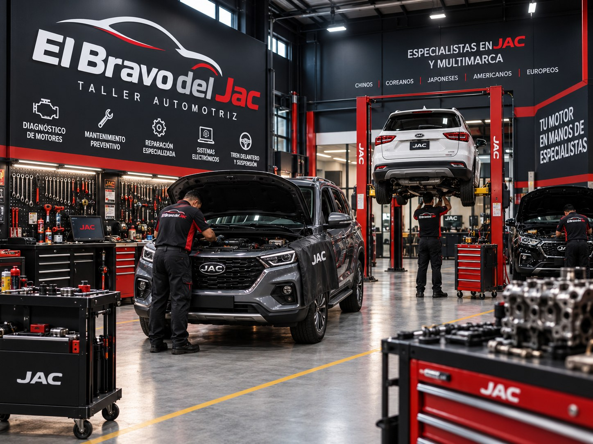

CUIDA TU VEHÍCULO
¿En qué podemos ayudarte?
Elige un servicio y conversemos por WhatsApp.
¡Elige tu servicio!

Desliza para ver los detalles. Toca el nombre del servicio para escribirnos por WhatsApp.
| Servicio | ¿Qué revisamos? | ¿Cuándo consultar? | |
|---|---|---|---|
| Reparación de motor | Culata, distribución y componentes internos | Ruidos, pérdida de potencia o averías | |
| Diagnóstico electrónico | Lectura de códigos y evaluación | Testigo de avería encendido | |
| Aceite y filtro | Lubricación y filtro de aceite | Según el manual del fabricante | |
| Sistema de frenos | Pastillas, discos y líquido | Ruidos o cambios al frenar | |
| Sistema de refrigeración | Refrigerante, fugas y mangueras | Temperatura elevada o fugas | |
| Mantenimiento general | Revisión preventiva y correctiva | Según el manual y estado del vehículo |
La frecuencia depende del modelo, uso y recomendaciones del fabricante.
Especialidad del taller
Especialistas en vehículos JAC
Conocemos sus motores, sistemas y fallas más frecuentes. Realizamos diagnóstico, mantenimiento y reparación especializada para toda la línea JAC.

También atendemos vehículos chinos, coreanos, japoneses, americanos y europeos.
Tu vehículo también es bienvenido
La experiencia con JAC se traduce en criterio técnico para cualquier procedencia. Atendemos motores de origen:
Así trabajamos tu vehículo
Un proceso ordenado, del ingreso a la entrega.
- 01
Recibimos tu vehículo
Registramos el motivo de ingreso y el historial que nos compartas.
- 02
Diagnóstico
Revisión y escaneo del motor para identificar el origen real de la falla.
- 03
Te explicamos la falla
Con lenguaje claro, sin tecnicismos innecesarios.
- 04
Presentamos la solución
Qué se va a reparar y por qué, antes de iniciar el trabajo.
- 05
Reparación
Intervención especializada sobre el sistema afectado.
- 06
Prueba del vehículo
Verificamos que la falla haya quedado resuelta.
- 07
Entrega y recomendaciones
Te devolvemos el vehículo con indicaciones para su cuidado.

Sobre nosotros
Diagnóstico claro, trabajo especializado
Somos un taller automotriz enfocado en diagnóstico, mantenimiento y reparación de motores. Nuestra experiencia con vehículos JAC y diferentes marcas nos permite encontrar soluciones eficientes para distintos tipos de fallas.
- Atención personalizada en cada visita
- Diagnóstico explicado de forma clara
- Transparencia antes de reparar
- Compromiso con el resultado
- Experiencia técnica en motor
Trabajos y proceso del taller
Un vistazo al día a día: motores, herramientas, vehículos y diagnóstico.
Lo que dicen nuestros clientes
La confianza de nuestros clientes es nuestra mejor garantía.
“Antes de llegar a El Bravo del Jac ya había llevado mi carro a varios talleres y nadie encontraba bien la falla. Acá se tomaron el tiempo de revisarlo, me explicaron qué tenía y finalmente pudieron solucionarlo. Me fui bastante tranquilo porque por fin quedó bien.”
“Muy buena atención. Pensé que la reparación iba a demorar bastante, pero trabajaron rápido y el carro quedó muy bien. También me pareció justo el precio para todo lo que hicieron. Sin duda volvería si necesito otra revisión.”
“Vine desde provincia porque me recomendaron el taller y realmente valió la pena el viaje. Desde que llegué me atendieron con bastante paciencia, revisaron el vehículo y me fueron explicando lo que iban encontrando. Agradezco mucho la atención personalizada y el trato que tuvieron conmigo.”